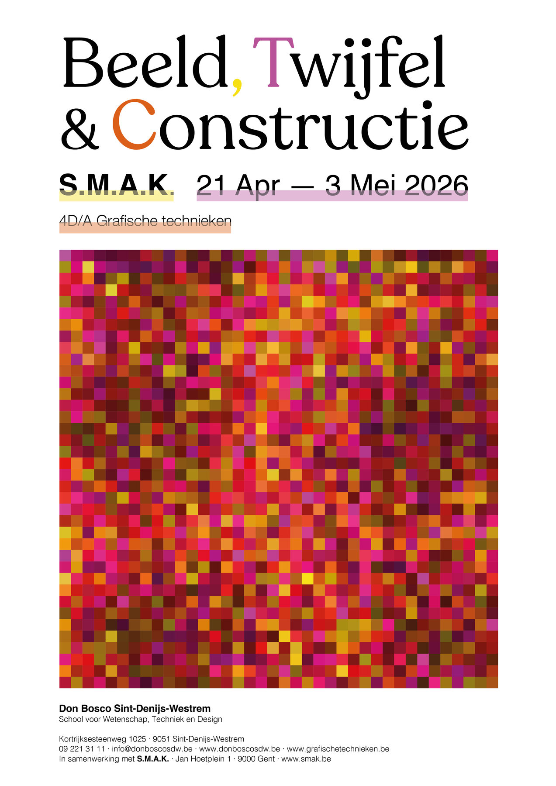
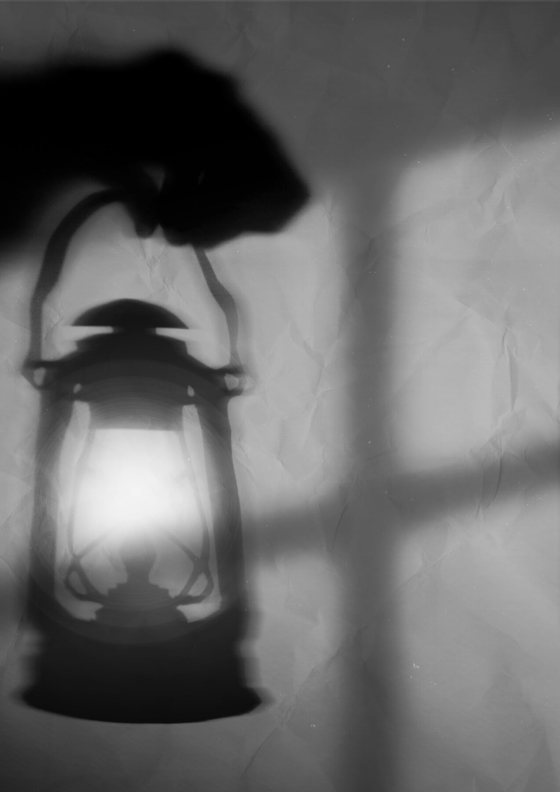
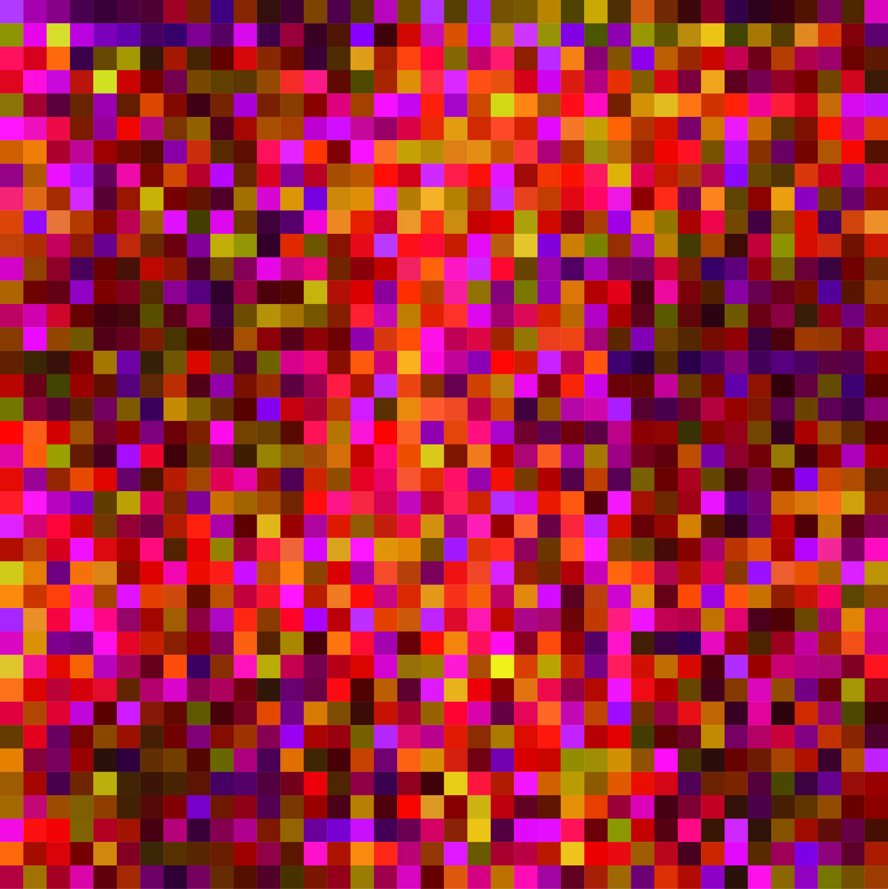
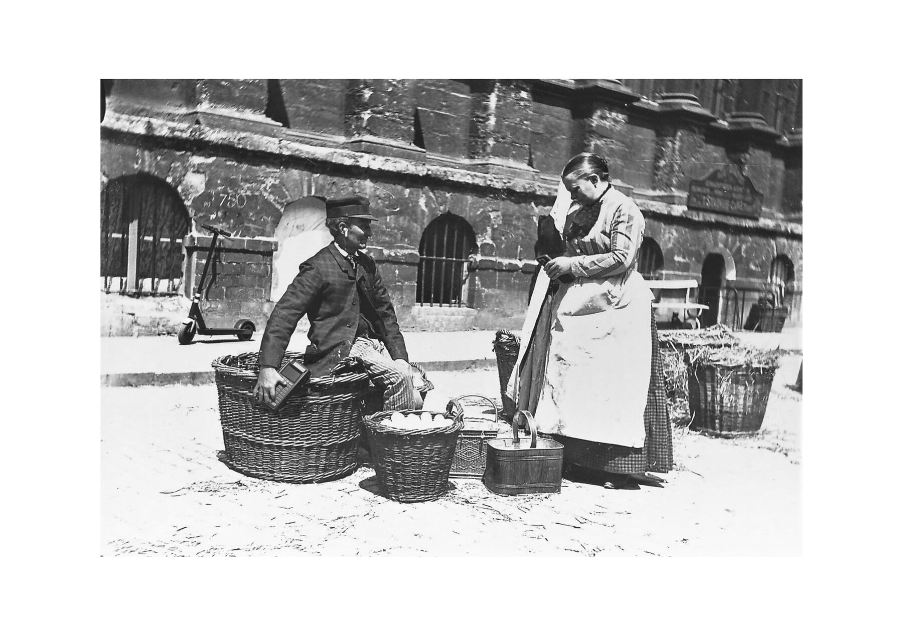
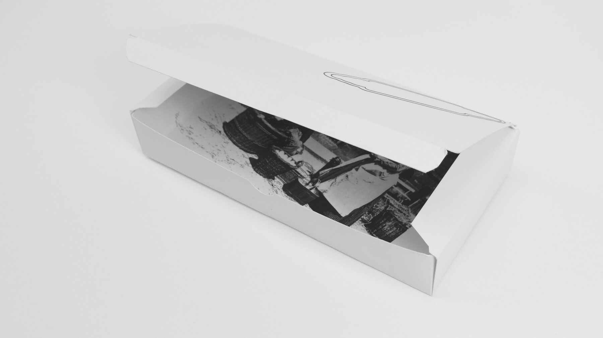
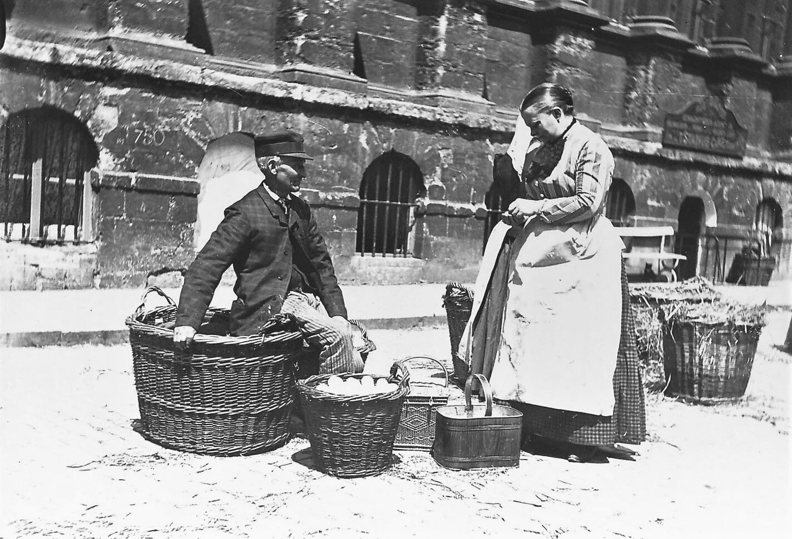

Een cultureel identiteitssysteem voor de tentoonstelling Point de voir van Marc De Blieck in het S.M.A.K. te Gent. Centrale vraag: wanneer geloven we een beeld?
Marc De Blieck (°1958, Sint-Niklaas) benadert fotografie als een nexus van technologische processen, culturele conventies en esthetische normen. Het integraal tentoonstellingsontwerp vertaalt twijfel als constructief designprincipe.
Typografie die balanceert op de grens van leesbaarheid, beelden die fragmenteren en herrijzen. Elk onderdeel spreekt dezelfde taal van spanning en onzekerheid.
Tentoonstellingsaffiche — A1

"Wanneer geloven we een beeld? Het moment van twijfel is het moment van grafisch denken."
— Conceptuele basis · Beeld, Twijfel & Constructie · S.M.A.K. 2025
Affiche in context


Animatie — After Effects
Posteranimatie · Adobe After Effects · 2025
Pixelwerk — Algoritmische beeldconstructie

Fotografische studie

Uitnodigingen
Archief & Research

